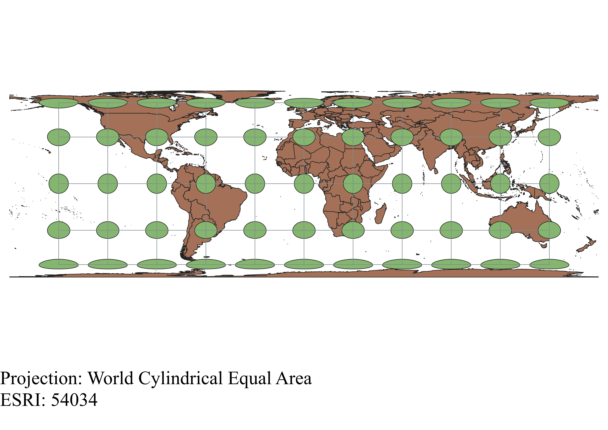
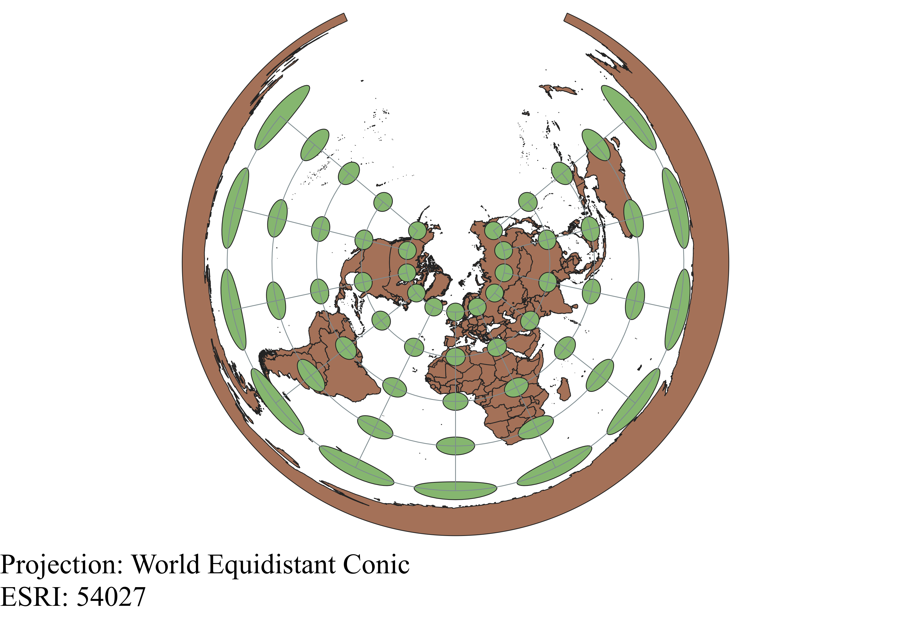
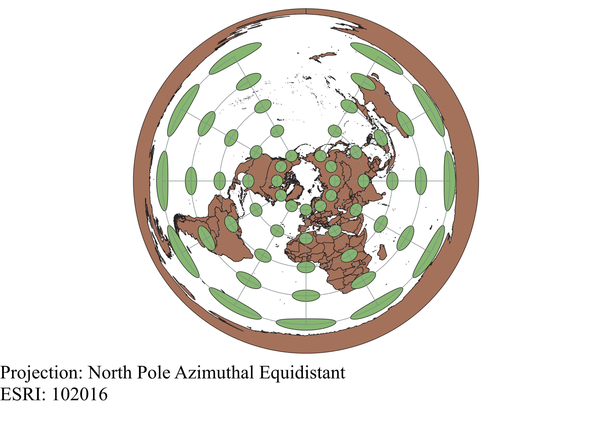
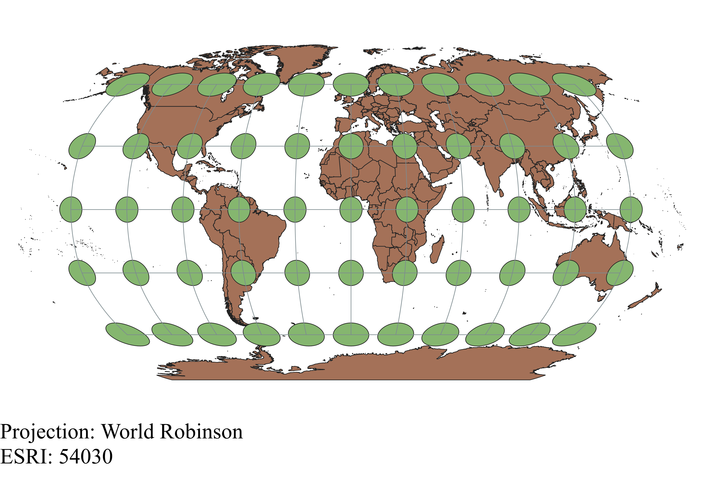
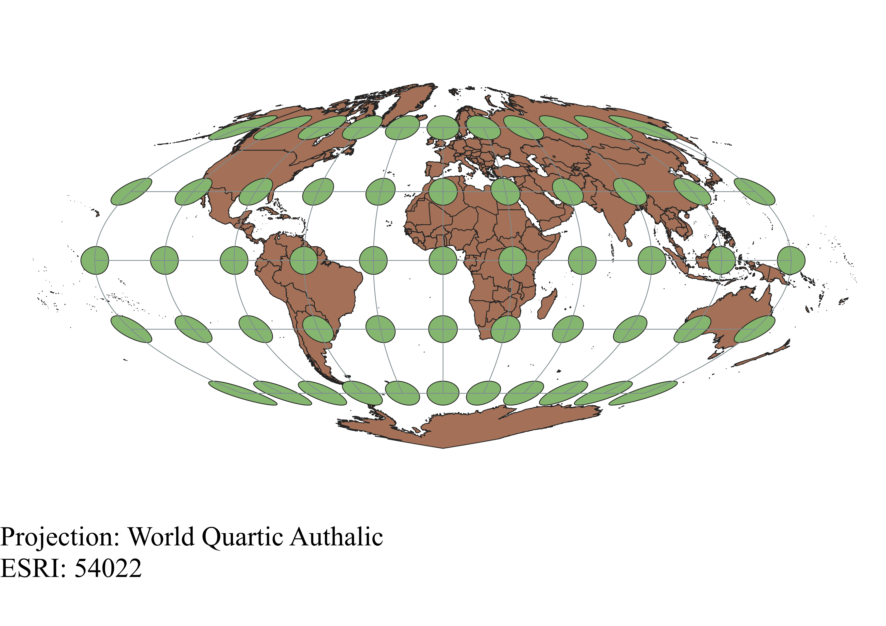

In this project I learned how to display images in different projections
Descibe how you displayed the map in different projections using QGIS:
To display the map in different projections using QGIS, I first imported my vector layer of the world map. Then, I installed the Indicatrix plugin and used it to add a layer of Tissot circles that show how each projection distorts the map. Finally, to change the projection, I changed the ESRI in the bottom right to the corresponding map projection that I wanted and applied it to my map.
WGS84 Projection
As the latitude increases, this projection distorts both the shape and area of the image. However, the majority of the map in the lower and middle latitudes is preserved.

Aitoff Projection
It appears that this projection distorts shapes, area, and direction a bit. The center of the map is best preserved, with most distortion occurring in the higher latitudes and longitudes.

Pseudo-Mercator Projection
This projection greatly distorts area/size in the higher latitudes of the Northern and Southern hemispheres, as indicated by the enlarged size of the Tissot circles. However, the shape and direction is preserved as seen in the perfectly circular shape of the circles and the straightness of the lines that connect them.

Sphere-Winkel Projection
This projection distorts shape, area, distance, and direction a bit. The most distortion occurrs in the corners of the map in the Eastern and Western regions of the poles.

World Cylindrical Equal Area Projection
As suggested by its name, the World Cylindrical Equal Area projection holds area constant while distorting the shape, direction, and distance. Distortion increases with the latitude.

World Equidistant Conic Projection
This projection preserves distance along meridians, but distorts it otherwise along with shape, area, and direction.

North Pole Azimuthal Equidistant Projection
This projection preserves direction and distance from the center (The North Pole). However, shape, scale, and area distortion increase as you look further from the center.

World Robinson Projection
The Robinson projection distorts shapes, areas, distances, and directions a bit. It seems similar to the Sphere-Winkel projection.

World Quartic Authalic Projection
I think this projection keeps area constant, judging by the size of the circles even when the shape is distorted. The shape, distance, and direction are increasingly distorted as the latitude increases, with the most distortion occurring in the corners of the map at the Eastern and Western regions of the poles.

Data used for this project
Download Natrual Earth 1:10m Cultural Vector